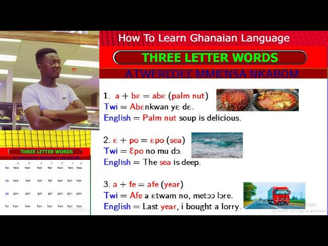
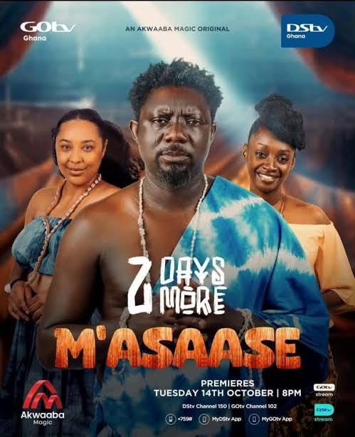
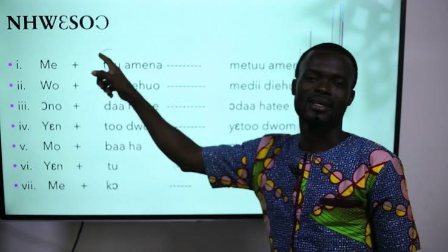
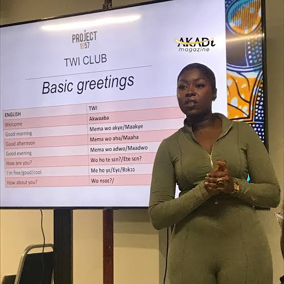
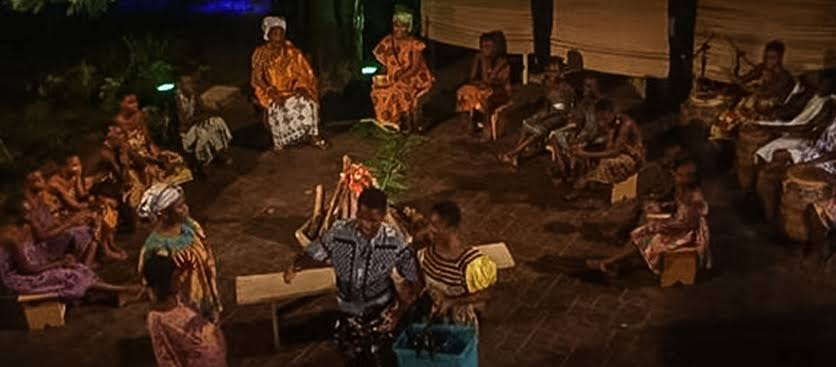
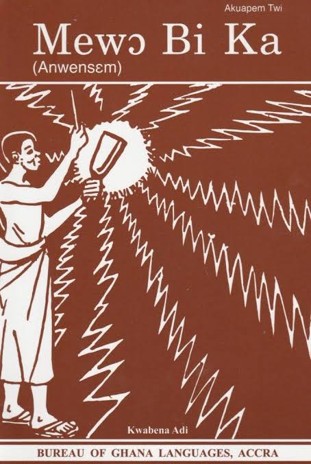
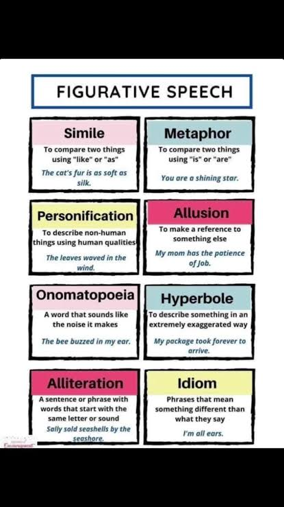

Ghanaian language study preserves culture, improves communication, enhances literary appreciation, and connects learners to local traditions and national identity.
Ghanaian language studies explore the languages and literature of Ghana, including Akan, Ewe, Ga, Dagbani, and other local languages. This subject emphasizes oral tradition, written texts, language skill development, and cultural values. Students learn to read, write, speak, and analyze texts in Ghanaian languages, as well as to understand how language reflects history, social life, and belief systems.

Ghanaian language is not just a set of words but a living expression of culture. It includes oral histories, proverbs, folktales, songs, dramas, and written texts that have been passed down through generations. Understanding and using these languages strengthens cultural heritage and enhances national unity.
Ghanaian language connects learners to their identity, community stories, and the poetry of everyday life.
Language structure refers to the rules that govern how words, sounds, and sentences are formed. Grammatical skills help learners use language accurately and clearly. In Ghanaian language studies, grammar includes phonology, morphology, and syntax, which together shape meaning and expression.
Grammar also includes understanding how to form questions, give commands, express tense, and use pronouns. Accurate grammar helps learners speak clearly and write correctly, making their messages stronger and more persuasive.
Mastering language structure is the foundation of all effective communication in speech and writing.
Phonology studies the sound systems of Ghanaian languages, including vowels, consonants, tones, and stress patterns. Many Ghanaian languages use tone to distinguish meaning; the same word can have different meanings depending on pitch. Learning correct pronunciation is essential for communicating clearly and avoiding misunderstanding.

Students practice listening carefully to tone patterns, consonant clusters, and vowel length. Exercises include reading aloud, repeating sentences, and identifying sounds in words. Good phonology gives language its musical and memorable qualities.
Sound is the first step in language learning: when pronunciation is accurate, meaning travels clearly.
Morphology examines how words are built from smaller parts called morphemes. In Ghanaian languages, morphemes include prefixes, suffixes, and infixes that change meaning, show tense, indicate plurality, or mark possession. Understanding word formation helps learners decode unfamiliar words and expand vocabulary.
Students learn to identify root words and the affixes that modify them. They also practice creating new words and using them correctly in sentences. This skill is especially useful for reading comprehension and vocabulary development.
Language grows by combining simple building blocks into meaningful words with different shades of meaning.
Syntax is the arrangement of words to form sentences. Ghanaian languages have patterns for subject, verb, object order, question formation, negation, and clause structure. Clear syntax ensures that ideas are expressed logically and smoothly.

Students practice building sentences from words, transforming statements into questions, and combining ideas using conjunctions. This strengthens both spoken and written skills and helps avoid confusion in communication.
Correct sentence structure lets meaning flow naturally and helps the listener or reader follow your thought.
Oral literature is the heart of Ghanaian language culture. It includes folktales, myths, proverbs, riddles, songs, and praise poetry passed down by word of mouth. Storytelling teaches morals, history, and community values while entertaining listeners with vibrant language and performance.

Folktales often feature animals, clever heroes, or community elders who solve problems. Proverbs are short sayings that express wisdom clearly and memorably. Students learn to recognize themes, characters, and lessons, and to retell stories with correct language and rhythm.
Oral literature keeps culture alive through stories, proverbs, and songs that speak directly to the community.
Written Ghanaian literature includes novels, short stories, plays, essays, and poetry. These texts build on oral traditions while using written language to explore modern issues, history, identity, and social change. Ghanaian poets often use imagery, rhythm, and local expressions to create powerful emotional and cultural effects.

Popular themes in Ghanaian written literature include nationalism, tradition versus modernity, social justice, gender roles, and the relationship between rural and urban life. Students study famous authors and poems, analyze style and meaning, and practice writing their own literary pieces in the Ghanaian language.
Written literature holds culture in words, preserving stories and voices for future generations.
Literary devices enrich language and make stories more memorable. In Ghanaian language literature, poets and storytellers use repetition, imagery, metaphor, simile, personification, alliteration, and proverbs to create meaning and evoke emotion. These devices connect the listener to the text through sensory details and cultural wisdom.

For example, a proverb such as "The mouth eats what the eyes do not see" teaches caution through a vivid image. Metaphor compares one thing to another, while alliteration gives phrases a rhythmic sound. Students identify these devices in texts and practice using them in their own writing.
Literary devices transform ordinary words into images and ideas that linger in the mind.
Language use in context means choosing words and style that fit the situation. Formal language is used in speeches, essays, and official letters, while informal language is used with family and friends. Respectful greetings, polite requests, and appropriate register are key to effective communication in Ghanaian language and culture.
Students learn formal and informal greetings, respectful forms of address, and appropriate ways to tell stories in public or private settings. They also practice writing letters, reports, and speeches that fit different purposes and audiences.
Knowing how to adapt your language to the situation shows respect and helps your message be understood.
Language appreciation involves recognizing beauty, meaning, and cultural value in texts. Criticism involves evaluating how well a text communicates, how effectively it uses language, and what themes or messages it conveys. Both skills help students become thoughtful readers and writers.
Students practice interpreting meaning, comparing texts, and discussing literary quality. They learn to support opinions with examples from the text and to respect different interpretations. This strengthens their ability to analyze not only Ghanaian language texts but all literature.
Appreciating and critiquing language turns reading into an active, thoughtful experience rather than a passive one.